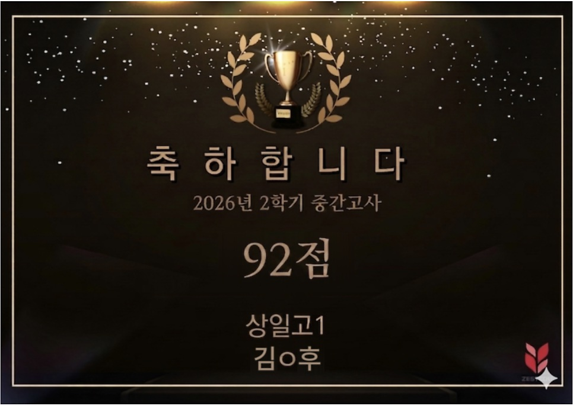
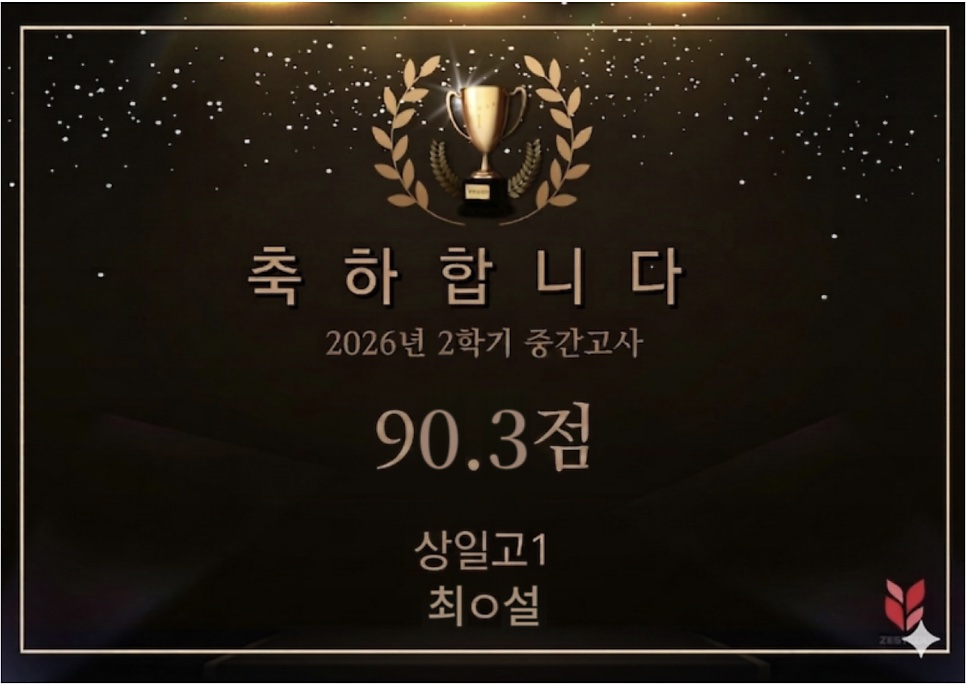
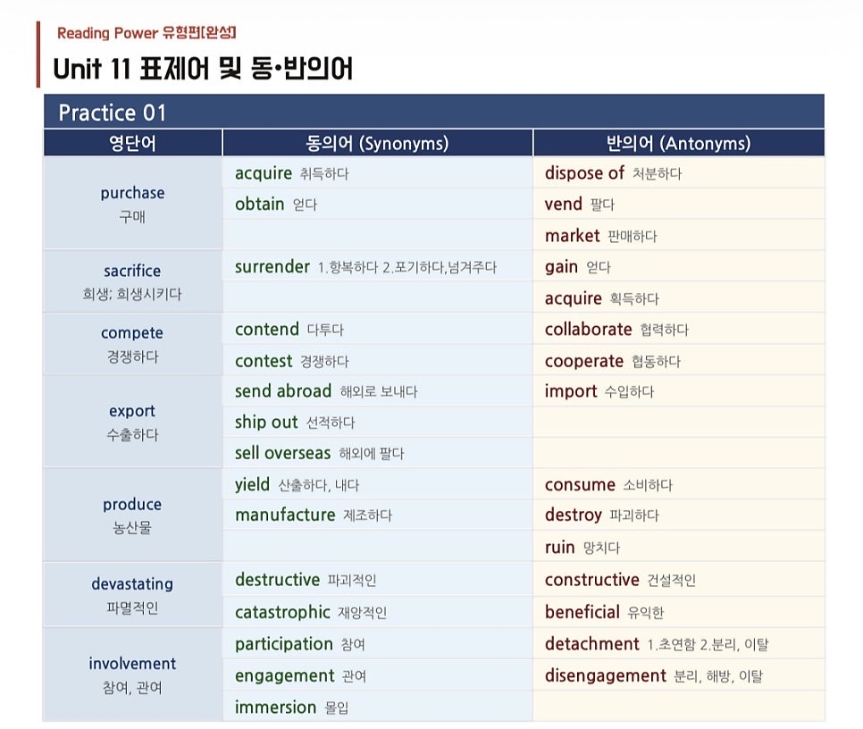
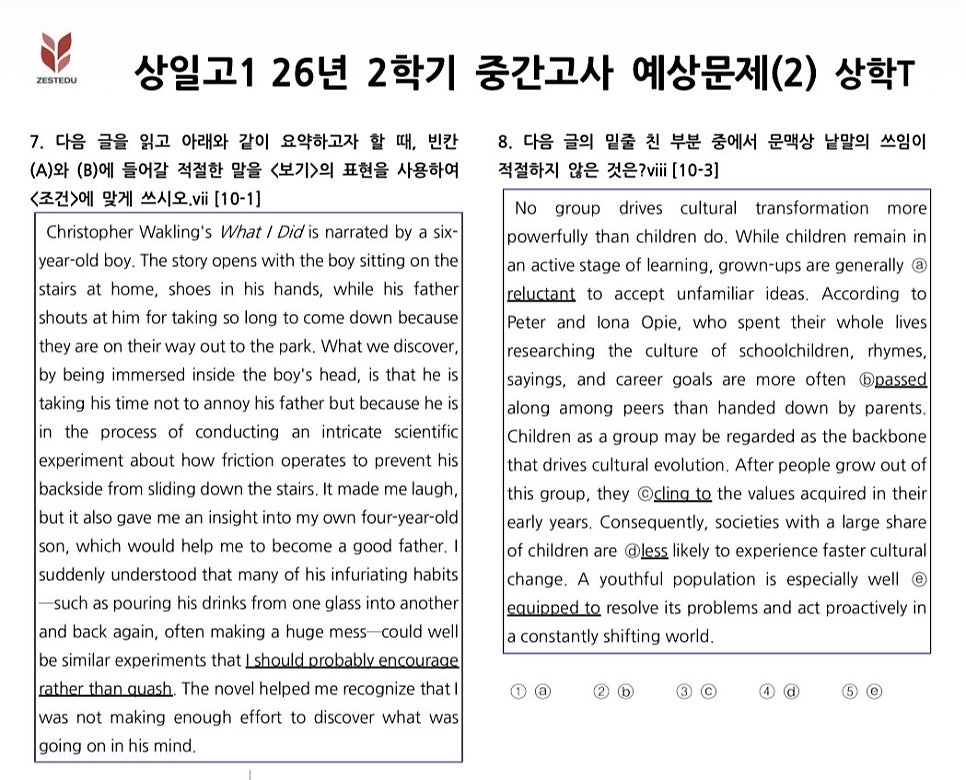

상일고1 2학기 중간고사,
이번 시험은 어땠을까?
상학T가 분석한 2026년 상일고1 2학기 중간고사입니다. 서술형은 1학기보다 평이했지만, 객관식 문항의 전반적 난이도가 상승하였습니다.
상학T가 예상하는 1등급 컷은 85±2점입니다.
이번 시험의 3가지 포인트
-
1수능 범위 이내의 고난도 어휘 비중 UP
not a few · retreat · alleviate · plunge · persistent · confidential · compromise · explicit 등 수능 범위 이내의 고난도 어휘 비중이 높아졌습니다.
-
2객관식 20지문 중 12지문을 변형
시험장에서 읽고, 풀어낼 수 있는 독해 & 어법 능력이 필수입니다.
-
3객관식 난이도 상승, 서술형은 평이
서술형은 1학기보다 평이했지만, 객관식 문항의 전반적 난이도가 상승하였습니다.
“그러면 제스트에듀 상일고1 학생들의 성적은?”


매 시험 찾아오는 적중 Series
상학T 수업 자료와 실제 시험지를 비교했습니다.
- 객관식 9번수업자료 「주제문장」 → 시험지 ③번 보기 어휘
- 객관식 10번수업자료 「주제문장」 → 시험지 ①번 보기 어휘
- 객관식 11번「동·반의어 List」 → 시험지 ④번 보기 어휘
- 객관식 12번「동·반의어 List」 → 시험지 ⑤번 보기 어휘
- 객관식 13번워크북(진위판별) → 시험지 ②, ⑤번 보기 어휘
- 객관식 16번직전 보강 자료(지문별 예상 유형) → 순서 문항 유사 출제
- 객관식 18번직전 보강 자료(지문별 예상 유형) → 문장 삽입 유사 출제
- 논술형 1번「논술형 1번 대비 예상 문제」 → ⓐ, ⓒ, ⓔ 보기 완벽 적중 🎯
- 논술형 3번워크북(진위판별) → (A) 핵심 표현 regard A as B


기말고사는 상학T와 함께
-
POINT 1
Reading Power 수업자료
전 유형을 대비할 수 있는 상학T만의 Read & Logic 수업 자료.
-
POINT 2
적중 동·반의어 자료
매 시험 10개 이상씩 적중하는 동·반의어 자료로, 시험 중 모르는 단어는 더 이상 없습니다.
-
POINT 3
엄선한 기출 · 예상문제
양보다 질. 타학교 기출 중에서도 엄선한 문제와 쪽집게 예상문제를 상학T가 미리 직접 풀어 보고 추려 냅니다.
-
POINT 4
서술형 대비의 Golden Time
시험 대비 전후와 방학이 서술형 점수를 올릴 때입니다. 서술형 점수 상승의 비결, 제스트에듀만의 내신 정복 Series로 준비합니다.
11월부터는 또다시 기말고사 준비가 시작됩니다. 원하는 등급을 유지하거나 만들기 위해 최선을 다할 상일고1 학생이라면,
더 나은 2학기 성적을 위해 제스트에듀 상학T와 함께하세요.